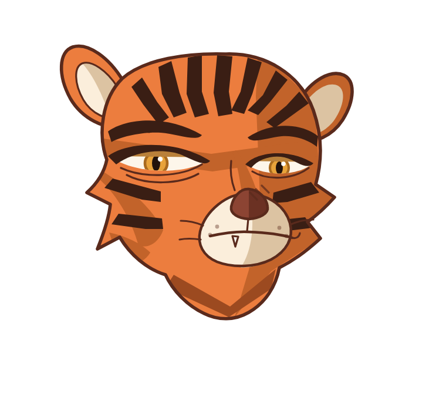
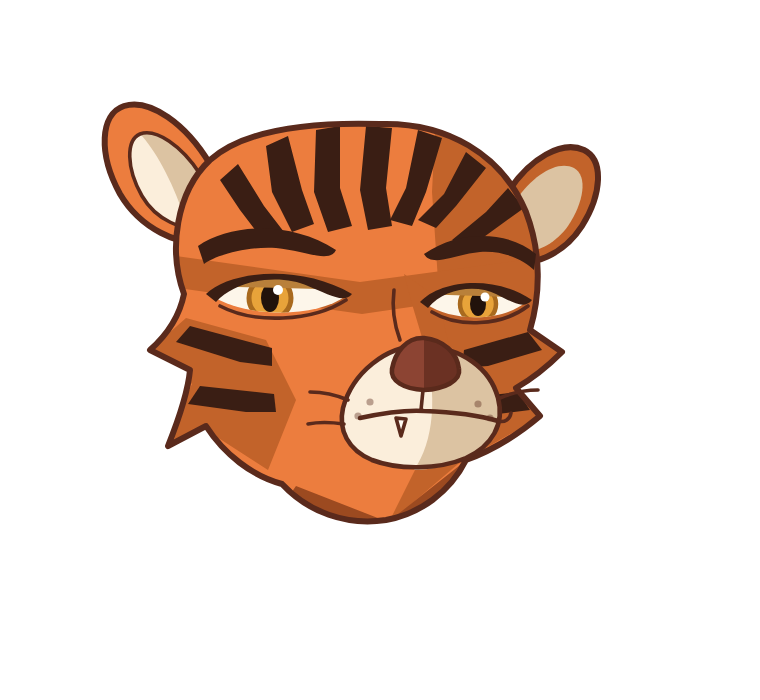
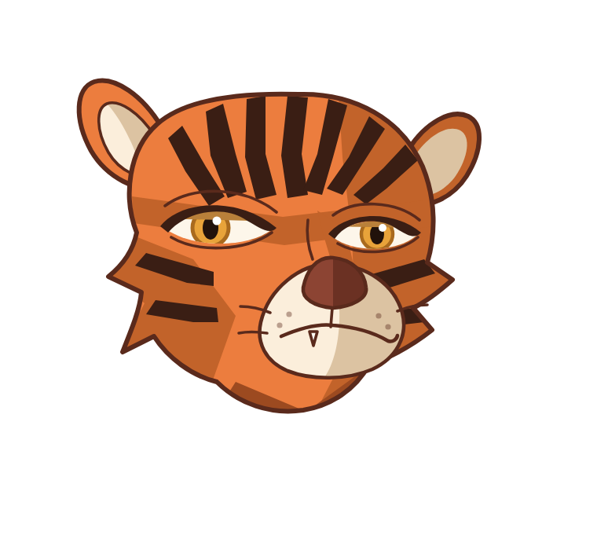

こわもてトラ — 顔スタディ
体は真横のまま、顔だけこちらを振り向かせる3/4。h が現時点の最良。
現在の候補

h ＝ 現時点の最良／面長に、目を横に長く細く、影を削り出しに

g／口を水平＋片端上げの冷笑に。眉を独立した形で追加

f／方向転換の1発目。口がへの字で「不機嫌」に見える
参考：方向を履き違えていた頃（牙を剥く獣）
体（作り直しが必要）
 tiger-v8／縞が放射状に暴発・後脚が白い柱。顔は3/4に差し替えるので頭は捨てる
tiger-v8／縞が放射状に暴発・後脚が白い柱。顔は3/4に差し替えるので頭は捨てる
 既存の子トラ ＝ これと被らせない
h に残っている宿題
既存の子トラ ＝ これと被らせない
h に残っている宿題
- まだ丸い。もっと面長・頬骨を高く・顎を細く
- 頬の影がまだ「貼った形」。削り出しのテーパーに
- 冷たさが足りない。まだ眠そうな猫寄り
- マズル（口まわりの白）が大きすぎる
- 奥側（画面右）が平たい